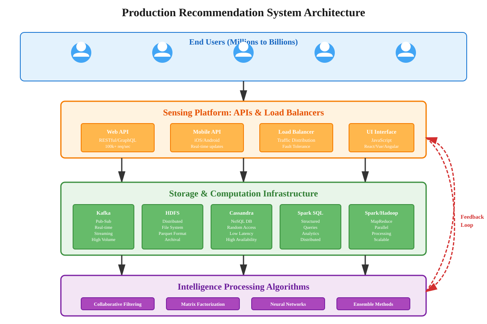
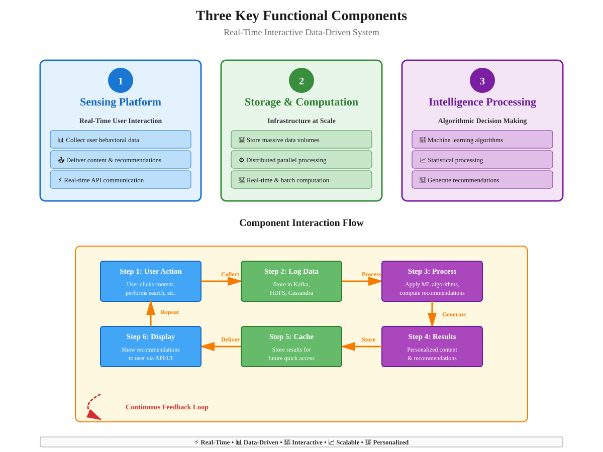
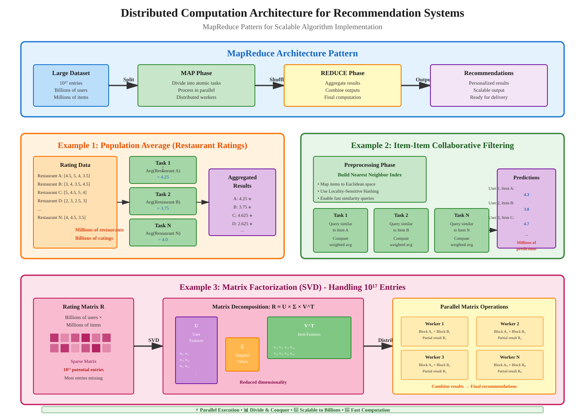

Building Production-Ready Recommendation Systems
📑 Quick Navigation
- Introduction
- Three Key Functional Components
- Sensing Platform: User Interface & APIs
- Storage and Computation Infrastructure
- Intelligence Processing Algorithms
- Distributed Implementation Strategies
- Open Source Technologies
- Deployment Considerations
- References & Further Reading
Introduction
Building a recommendation system for production environments like Amazon, Netflix, or YouTube requires far more than implementing recommendation algorithms alone. A production recommendation system is a real-time, interactive, data-driven service that operates at massive scale, serving tens or hundreds of millions of users simultaneously.
Scale Reference:
- Google Search: Over 2 million searches performed every second
- Target Systems: Designed to handle hundreds of thousands of requests per second
- Data Volume: Rating matrices with 10¹⁷ entries (hundreds of millions of users × millions of products)

Core Challenge:
The recommendation system must identify which content to display on the user's interface every time the user performs an action, delivering personalized recommendations in real-time while processing and learning from billions of interactions continuously.
Three Key Functional Components
Every real-time interactive data-driven system requires three interconnected functional components that work in harmony:

Component Overview
1. Sensing Platform:
- Purpose: Real-time interaction with end-users
- Functions:
- Collecting user behavioral data
- Delivering appropriate content and recommendations
- Providing seamless user experience
2. Storage and Computation Infrastructure:
- Purpose: Handle massive data volumes and computational demands
- Functions:
- Store user behavior information in real-time
- Perform meaningful computation at scale
- Enable both real-time and batch processing
3. Intelligence Processing Algorithms:
- Purpose: Extract insights and make decisions
- Functions:
- Process data collected via sensing platforms
- Apply machine learning and statistical algorithms
- Generate personalized recommendations
Interaction Flow:
User Action → Sensing Platform → Log to Storage → Process with Algorithms → Generate Recommendations → Deliver via Sensing Platform → Store Results
Key Principle:
These three components form a continuous feedback loop where data flows from users through processing systems and back to users, with each interaction informing future recommendations.
Sensing Platform: User Interface & APIs
Modern Web-Scale Interface Design
In modern environments, users interact with systems through web browsers or mobile applications. The critical infrastructure that enables this interaction is the Application Program Interface (API).
API Architecture:
- Load Balancing: Array of web servers behind load balancers
- Request Volume: Potentially hundreds of thousands of requests per second
- Dual Functionality: Receive user data and deliver system responses
User Interface Development
Popular Technologies:
- JavaScript Frameworks: Highly interactive web interfaces
- Mobile Apps: Native iOS/Android applications
- Web Browsers: Cross-platform accessibility
Key Design Considerations:
- Correct API Integration: Utilize appropriate APIs at correct interface points
- Creative UI Design: Thoughtful user experience design
- Responsive Interaction: Immediate feedback to user actions
API Request-Response Flow
Example Workflow:
- User Action: User clicks on media content
- API Request: Interface sends request with appropriate message
- API Response: Provides streaming connection to content
- UI Update: Display content stream and recommendations
- Data Logging: Store interaction for future processing
Critical Success Factors:
- API Design: Define clear, well-structured APIs
- Performance: Handle high-volume concurrent requests
- Reliability: Maintain consistent service availability
- Scalability: Support growing user base without degradation
Storage and Computation Infrastructure
Data Storage Solutions
Production recommendation systems require robust infrastructure to handle massive data volumes reliably.
Storage Requirements:
- High Volume: Billions of user interactions daily
- Real-time Processing: Immediate data availability
- Archival: Long-term storage for historical analysis
- Random Access: Quick retrieval for computation
Apache Kafka: Pub-Sub Infrastructure
Purpose: Handle high-volume data streams reliably
Characteristics:
- Publishing and Subscription (Pub-Sub) Model: Efficient message distribution
- High Throughput: Handle massive message volumes
- Distributed Architecture: Fault-tolerant and scalable
- Real-time Processing: Immediate data availability
Hadoop File System (HDFS)
Purpose: Distributed file storage for archival and analysis
Features:
- Distributed Storage: Data replicated across cluster
- Fault Tolerance: Automatic recovery from failures
- Batch Processing: Support for large-scale data analysis
- Integration: Works with processing frameworks
Data Format - Parquet:
- Columnar Storage: Efficient for analytical queries
- Compression: Reduced storage requirements
- Schema Evolution: Support for changing data structures
- Query Performance: Optimized for read-heavy workloads
Spark SQL: Structured Queries
Purpose: Efficient structured data queries on distributed data
Capabilities:
- SQL Interface: Familiar query language
- Distributed Execution: Process data across cluster
- Integration: Works with parquet files in HDFS
- Performance: Optimized query execution
Apache Cassandra: Distributed Database
Purpose: Random-access distributed database for real-time operations
Characteristics:
- NoSQL Architecture: Flexible schema design
- High Availability: No single point of failure
- Linear Scalability: Performance grows with cluster size
- Low Latency: Fast read/write operations
- Random Access: Quick retrieval of specific records
Use Cases:
- User Profiles: Store and retrieve user information quickly
- Real-time Recommendations: Access pre-computed recommendations
- Session Data: Maintain user session state
- Feature Storage: Store computed features for algorithms
Intelligence Processing Algorithms
Distributed Computation Architecture
To handle web-scale data and computation, recommendation systems utilize distributed computing frameworks based on the MapReduce architecture.

MapReduce Architecture
Origin: Popularized by Google engineers
Core Principle:
Algorithm = Composition of Small Atomic Tasks
Implementation Frameworks:
- Hadoop: Original open-source MapReduce implementation
- Apache Spark: Modern, faster alternative with in-memory processing
Design Strategy:
- Atomic Tasks: Break algorithm into small, independent operations
- Data Partitioning: Each task operates on small data subset
- Parallel Execution: Tasks run simultaneously across cluster
- Clever Interleaving: Coordinate tasks for optimal performance
Example 1: Population Average Recommendation
Algorithm: Compute average rating for each restaurant
Distributed Implementation:
Approach:
- Task Division: Create separate task for each restaurant
- Data Query: Each task queries all ratings for its restaurant
- Computation: Calculate average of ratings
- Aggregation: Collect results from all tasks
Advantages:
- Parallelism: All restaurants processed simultaneously
- Simplicity: Adding numbers is computationally easy
- Scalability: Handles millions of restaurants efficiently
Mathematical Formulation:
Rating_avg(restaurant_i) = (1/n_i) * Σ(rating_j) for all ratings j of restaurant_i
Where:
- Rating_avg(restaurant_i) = average rating for restaurant i
- n_i = number of ratings for restaurant i
- rating_j = individual rating value
Example 2: Item-Item Collaborative Filtering
Algorithm: Estimate missing rating using similar items' ratings
Challenge: Finding similar items quickly at scale
Distributed Implementation Strategy:
Step 1: Preprocessing
- Goal: Create data structure for fast similarity lookups
- Approach: Build nearest neighbor index
- Output: Quick query capability for similar items
Step 2: Task Creation
- Task Division: One task per restaurant
- Data Access: Query database for similar restaurants
- Computation: Weighted average of similar items' ratings
- Execution: Parallel processing across all restaurants
Mathematical Formulation:
Rating(user_u, item_i) = Σ(similarity(item_i, item_j) × Rating(user_u, item_j)) / Σ(similarity(item_i, item_j))
Where:
- Rating(user_u, item_i) = predicted rating for user u on item i
- similarity(item_i, item_j) = similarity score between items i and j
- Sum over j = all similar items that user u has rated
Nearest Neighbor Index: The Key to Scale
Problem: How to find similar items quickly (like database query)?
Solution: Locality-Sensitive Hashing (LSH)
Core Concept:
- Mapping: Transform each item to point in low-dimensional Euclidean space
- Similarity Preservation: Close items in original space remain close in Euclidean space
- Fast Search: Finding neighbors in Euclidean space is computationally efficient
Dimensional Reduction:
High-Dimensional Similarity Space → Low-Dimensional Euclidean Space (3D or similar)
Analogy:
Finding similar restaurants is like finding your closest physical neighbor—just take a few steps in every direction and report the first one you meet.
Locality-Sensitive Hashing (LSH):
- Efficient Implementation: Fast to compute and query
- Approximate Results: Trade perfect accuracy for speed
- Scalable: Works with billions of items
- Distributed: Can be parallelized effectively
Example 3: Matrix Factorization (SVD)
Algorithm: Singular Value Decomposition of rating matrix
Challenge: Matrix with 10¹⁷ entries (billions of users × millions of products)
Core Operation: Matrix multiplication at massive scale
Distributed Implementation:
Strategy:
- Data Division: Partition matrix into smaller blocks
- Task Division: Separate multiplication tasks per block
- Computation: Parallel matrix operations
- Aggregation: Combine results efficiently
MapReduce Implementation:
- Map Phase: Distribute matrix blocks to workers
- Computation: Perform local matrix multiplications
- Reduce Phase: Aggregate partial results
- Iteration: Repeat for convergence
Mathematical Formulation:
R ≈ U × Σ × V^T
Where:
- R = original rating matrix (users × items)
- U = user feature matrix
- Σ = diagonal singular value matrix
- V^T = item feature matrix transpose
Scalability:
Matrix multiplication can be cleverly divided and scaled using MapReduce-like architectures despite prohibitively large matrix sizes.
Distributed Implementation Strategies
General Principles for Scaling Algorithms
Core Strategy:
Large Algorithm → Many Small Atomic Tasks → Parallel Execution → Aggregated Result
Key Requirements:
1. Task Decomposition:
- Atomic Operations: Smallest meaningful computation units
- Independence: Tasks minimally dependent on each other
- Data Locality: Each task operates on local data subset
- Clear Interfaces: Well-defined inputs and outputs
2. Data Partitioning:
- Logical Division: Split data into manageable chunks
- Balanced Distribution: Even workload across tasks
- Minimal Communication: Reduce data transfer between nodes
- Replication: Handle failures through redundancy
3. Parallel Execution:
- Concurrent Processing: Multiple tasks run simultaneously
- Resource Management: Efficient CPU and memory utilization
- Task Scheduling: Optimize task execution order
- Fault Tolerance: Handle node failures gracefully
4. Result Aggregation:
- Efficient Combination: Merge partial results quickly
- Consistency: Ensure correct final results
- Incremental Updates: Support streaming results
- Checkpoint: Save intermediate states
Preprocessing for Real-Time Performance
Strategy: Compute expensive operations offline, serve results in real-time
Benefits:
- Low Latency: Real-time queries return pre-computed results
- Resource Efficiency: Spread computation over time
- Scalability: Handle more users with same infrastructure
- Flexibility: Update pre-computed data periodically
Examples:
- Similarity Indices: Pre-compute item similarities
- User Embeddings: Pre-calculate user feature vectors
- Popular Items: Pre-rank trending content
- Neighborhood Graphs: Pre-build social connections
Update Strategy:
- Batch Processing: Nightly or hourly recomputation
- Incremental Updates: Add new data without full recomputation
- Hybrid Approach: Combine real-time and batch processing
- Cache Invalidation: Refresh stale pre-computed results
Open Source Technologies
Apache Software Foundation Ecosystem
The Apache Software Foundation provides a comprehensive suite of open-source tools for building production recommendation systems.
Core Technologies Summary:
| Component | Technology | Purpose | Key Features |
|---|---|---|---|
| Pub-Sub System | Apache Kafka | Real-time data streaming | High throughput, fault-tolerant, distributed |
| Distributed Storage | Hadoop HDFS | Long-term data storage | Replicated, scalable, batch processing |
| Data Format | Apache Parquet | Columnar storage format | Compressed, efficient queries, schema evolution |
| SQL Queries | Spark SQL | Structured data queries | Distributed execution, familiar interface |
| NoSQL Database | Apache Cassandra | Real-time data access | High availability, low latency, scalable |
| Computation | Apache Spark | Distributed processing | In-memory, faster than Hadoop, rich APIs |
| Legacy Computation | Apache Hadoop | MapReduce processing | Mature, stable, well-documented |
Technology Stack Recommendations
For Starting Projects:
- Compute: Apache Spark (modern, faster)
- Storage: HDFS with Parquet format
- Database: Cassandra for real-time needs
- Streaming: Kafka for data pipelines
- Queries: Spark SQL for analytics
For Large-Scale Production:
- All of the above, plus:
- Load Balancing: HAProxy or Nginx
- API Gateway: Kong or Apache APISIX
- Monitoring: Apache Kafka monitoring, Cassandra metrics
- Orchestration: Apache Airflow for workflow management
Cloud Platform Considerations
Benefits of Cloud Computing:
- Quick Start: Launch infrastructure without hardware procurement
- Scalability: Scale resources up or down as needed
- Managed Services: Reduce operational overhead
- Cost Efficiency: Pay only for resources used
- Global Reach: Deploy across multiple regions
Evolution Path:
Start: Cloud-based infrastructure (quick deployment)
↓
Grow: Optimize cloud costs and performance
↓
Scale: Evaluate on-premise vs cloud economics
↓
Mature: Hybrid approach (on-premise + cloud)
Major Cloud Providers:
- Amazon Web Services (AWS): EMR (Hadoop/Spark), Kinesis (Kafka alternative)
- Google Cloud Platform (GCP): Dataproc, Cloud Dataflow
- Microsoft Azure: HDInsight, Event Hubs
Deployment Considerations
System Design Philosophy
Core Principle:
Building a recommendation system is fundamentally about providing the right APIs and defining them carefully to support promised functionality at scale.
Critical Design Decisions
1. Latency Requirements:
- Real-time Recommendations: < 100ms response time
- Batch Recommendations: Minutes to hours acceptable
- Hybrid Approach: Combine pre-computed and real-time
2. Consistency vs Availability:
- Strong Consistency: All users see same recommendations immediately
- Eventual Consistency: Recommendations converge over time (preferred for scale)
- CAP Theorem: Choose two of Consistency, Availability, Partition Tolerance
3. Data Freshness:
- Real-time Updates: Reflect latest interactions immediately
- Periodic Updates: Refresh recommendations hourly/daily
- Trade-off: Freshness vs computational cost
4. Personalization Depth:
- Fully Personalized: Unique recommendations per user (expensive)
- Segment-based: Group similar users (balanced)
- Population-based: Same for all users (cheap)
- Hybrid: Combine approaches based on user activity
Infrastructure Evolution Strategy
Phase 1: Launch
- Focus: Get product to market quickly
- Approach: Use cloud services and managed solutions
- Scale: Support initial user base (thousands to millions)
Phase 2: Growth
- Focus: Optimize performance and costs
- Approach: Fine-tune cloud configurations
- Scale: Handle growing user base (millions to tens of millions)
Phase 3: Maturity
- Focus: Evaluate infrastructure ownership
- Approach: Consider on-premise deployment for core systems
- Scale: Serve hundreds of millions to billions
Phase 4: Optimization
- Focus: Hybrid infrastructure
- Approach: Maintain on-premise for stable workloads, cloud for bursts
- Scale: Maximum efficiency at any scale
Monitoring and Maintenance
Key Metrics to Track:
- Latency: Request response times (p50, p95, p99)
- Throughput: Requests per second handled
- Error Rates: Failed requests and retries
- Resource Utilization: CPU, memory, disk, network
- Recommendation Quality: Click-through rates, engagement metrics
- Data Pipeline Health: Data freshness, processing delays
Operational Considerations:
- Logging: Comprehensive logging for debugging and analysis
- Alerting: Automated alerts for system issues
- Backup: Regular backups of critical data
- Disaster Recovery: Plans for system failures
- Security: Protect user data and system integrity
- Compliance: Meet regulatory requirements (GDPR, CCPA, etc.)
References & Further Reading
Academic Papers
- MapReduce: Simplified Data Processing on Large Clusters
- Authors: Jeffrey Dean and Sanjay Ghemawat (Google)
- Link: Research Paper
-
Key Focus: Foundational MapReduce architecture
-
Matrix Factorization Techniques for Recommender Systems
- Authors: Koren, Bell, and Volinsky
- Published: IEEE Computer Society (2009)
-
Link: IEEE Paper
-
Locality-Sensitive Hashing Scheme Based on p-Stable Distributions
- Authors: Datar, Immorlica, Indyk, and Mirrokni
- Published: ACM Symposium on Computational Geometry (2004)
- Link: ACM Paper
Technical Documentation
- Apache Spark Documentation
- Link: https://spark.apache.org/docs/latest/
-
Topics: RDDs, DataFrames, MLlib, Spark SQL, Streaming
-
Apache Kafka Documentation
- Link: https://kafka.apache.org/documentation/
-
Topics: Producers, consumers, streams, connectors
-
Apache Cassandra Documentation
- Link: https://cassandra.apache.org/doc/latest/
- Topics: Data modeling, CQL, architecture, operations
Books
- Designing Data-Intensive Applications
- Author: Martin Kleppmann
- Publisher: O'Reilly Media (2017)
-
Topics: Distributed systems, data storage, stream processing
-
Recommender Systems: The Textbook
- Author: Charu C. Aggarwal
- Publisher: Springer (2016)
- Topics: Collaborative filtering, content-based, hybrid approaches
Online Resources
- Apache Software Foundation Projects
- Link: https://apache.org/index.html#projects-list
-
Explore: All Apache open-source projects
-
Netflix Tech Blog: Recommendation Systems
- Link: https://netflixtechblog.com/
- Topics: Real-world implementation insights from Netflix engineers
Document Information:
- Topic: Building Production-Ready Recommendation Systems
- Target Audience: AI Engineers, ML Researchers, Data Scientists
- Prerequisites: Understanding of recommendation algorithms, basic distributed systems
- Estimated Reading Time: 25-30 minutes